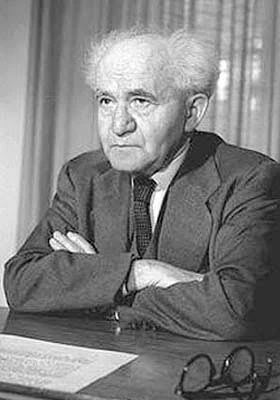

ד.ב.ר
דמוקרטים בוחרים רציונלית
⬅️
© 2026 Silvertel Online ltd | כל הזכויות שמורות
🏛️ הוועדה המסדרת — סימולציות היסטוריות

📜
'">
בן־גוריון · 1948
להקים מדינה על פי המגילה
🕊️
'">
רבין · 1992
סדר עדיפויות חדש